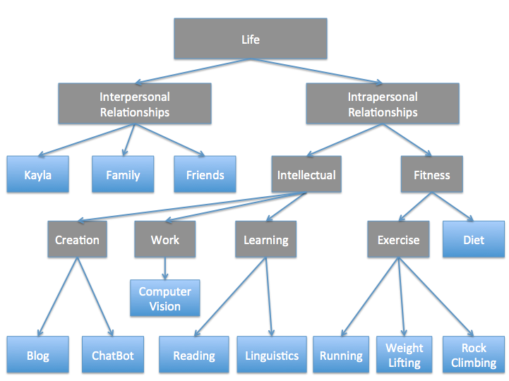

Philosophy of the Good Life
Philosophy is often seen as a highly intellectual field devoid of real world application. In fields like Metaphysics and Phenomenology, this is largely the case: heuristics have given way to picayune debate over abstract minutiae. This represents a significant deviation from the original purpose of philosophy throughout the ancient world: systematically analyzing and prescribing the prerequisites for a life well lived.
Take, for example, the ancient Chinese philosopher, Confucius. One of Confucius' main concerns was ren (仁) which is often translated as benevolence or manhood-at-its-best. According to Readings in Classical Chinese Philosphy,
ren designates for [Confucius] the quality of the perfectly realized person - one who has so completely mastered the Way that it has become a sort of second nature.Confucius' collection of aphorisms, The Analects act mainly as a guide toward embodying ren. In contrast to modern metaphysics, these philosophical teachings took on enormous importance in ancient China. Entrance into the Chinese state bureaucracy required that applicants complete an imperial examination that included the verbatim reproduction of thousands of Confucian aphorisms. Resultantly, the Confucian path to Ren overshadowed Chinese politics for hundreds of years.
The ancient Greeks had a concept analogous to ren known as eudaimonia, or the life well lived. Eudaimonia is often translated as happiness, or flourishing. It represents the type of life that we embark on a philosophical journey to obtain. In the Encheiridion, the Ancient Stoic Philosopher, Epictetus, outlines the philosophical approach necessary to reach eudaimonia:
What upsets people is not things themselves but their judgments about the things... Do not seek to have events happend as you want them to, but instead want them to happen as they do, and your life will go well.
What Epictetus is outlining is a paradigm in which one acknowledges with alacrity the inevitabilities of life, regardless of whether these inevitibilities materially benefit or harm oneself. For Epictetus, paradigm is the major driver of human happiness. The only barrier between one's current state and eudaimonia is how one perceives the world.
While Epictetus opines a paradigm based approach to obtaining the best life possible, I am going to take an action based approach. I agree with Epictetus' teachings to a large extent, but I don't think that I will ever reach a point where I can fully forgo my woes just because I know I am not in control. I see this perspective as overly idealistic.
I certainly don't have the best answer to how to lead a good life. Far smarter people have devoted far more time to solving this problem than I have, but I do believe that I have something to contribute to this pursuit: a statistically driven, methodical approach to maximizing happiness. My goal in this post is to produce a statistical approach to quantifying my ren/eudaimonia. This is not a novel concept: comedian Demetri Martin developed a rudimentary system in which he calculated a weekly well being score (See links section for video on this). The difference is that my approach will introduce more statistical complexity to this analysis.
Assumptions
I begin by building a heirarchy of forces that contribute to personal happiness. The general assumption is that the optimal combination of these forces will lead to an increase of personal happiness. It should go without saying that this model is in no way complete, it is not expected to lead to the maximum possible state of happiness for an individual; however, this model can be used to increase personal wellbeing.
This model also assumes that your happiness can be significantly improved by a change in your actions. To this end, this model will be based on actions in the last week. The model will use these actions to score your weekly well being and prescribe possible room for growth in the upcoming week. These actions are built in accordance with a conceptual heirarchy.
Hierarchy of Priorities
The hierarchy of priorities represents the components of one's life that, when balanced properly, lead to eudaimonia. This heirarchy (taking the shape of a tree) moves from the abstract to the concrete where terminal nodes are a discrete aspect of one's life that can be measured. Splits on this tree will differ from person to person. Below is an example of this heirarchy for my current life.
 My personal priority heirarchy. Terminal nodes represent attributes of my life that I can directly measure (seen in blue). Each of these will be attributed with a number (n >=1) of metric(s).To be continued
Links
- Video on Demetri Martin's Weekly Well Being Score
- Wiki on Confucian Concept of Ren
- Wiki on Chinese Imperial Exams
- Article about Epictetus